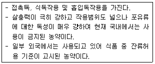
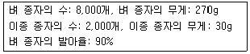

식물보호기사 (2015-03-08 기출문제)
1과목: 식물병리학
1. 식물병원균에 대한 길항균으로 많이 사용되는 것은?
- Rhizoctonia solani
- Streptomyces scabies
- Penicillium expansum
- Trichoderma harzianum
(정답률: 68%)

2. 병든 보리, 밀을 먹는 사람과 돼지 등에 심한 중독을 일으키는 병해는?
- 깜부기병
- 흰가루병
- 줄무늬병
- 붉은 곰팡이병
(정답률: 91%)
3. 파이토플라즈마에 의한 수목병인 뽕나무 오갈병의 치료제로 주로 쓰이는 것은?
- 페니실린
- 그리세오풀빈
- 옥시테트라사이클린
- 시클로헥시마이드
(정답률: 90%)
4. 묘포장에서 어린 묘목에 피해를 입히는 원인이 아닌 것은?
- 과습
- 균근균
- 모잘록병균
- 뿌리썩이선충
(정답률: 58%)
5. 매개충에 의해 경란 전염하는 바이러스 병해는?
- 담배 모자이크병
- 감자 X 바이러스병
- 벼 줄무늬잎마름병
- 보리 줄무늬모자이크병
(정답률: 71%)
6. 과수의 자주날개무늬병균은 분류학적으로 어느 균류에 속하는가?
- 난균
- 담자균
- 자낭균
- 접합균
(정답률: 77%)
7. 벼 흰잎마름병균은 주로 어디에서 월동하여 제1차 전염원이 되는가?
- 겨풀 뿌리
- 바랭이 뿌리
- 억새풀 뿌리
- 물달개비 뿌리
(정답률: 76%)
8. 식물바이러스병의 생물학적 진단법은?
- 슬라이드법
- 괴경지표법
- 형광항체법
- X-체 검경법
(정답률: 77%)
9. 순활물기생균(절대기생균)의 일반적인 설명으로 옳은 것은?
- 임의기생균이라고 한다.
- 기주세포를 자력으로 죽여 양분을 섭취한다.
- 죽은 생물체나 무기물로부터 양분을 섭취한다.
- 인공배양은 어려우나 일부 녹병균에서 성공한 사례는 있다.
(정답률: 76%)
10. 저항성 품종을 이용한 방제방법의 가장 큰 문제점은?
- 비경제성
- 비효과성
- 약해 및 잔류독성
- 저항성 품종의 이병화 현상
(정답률: 91%)
11. 식물병의 면역학적 진단 방법을 의미하는 용어는?
- SSCP
- RACE
- ELISA
- RAPDs
(정답률: 85%)
12. 배추 모자이크병의 주요 매개 곤충은?
- 진딧물
- 애멸구
- 이화명나방
- 복숭아혹진딧물
(정답률: 72%)
13. 병원균이 포도 탄저병균(Glomerella cingulata)과 같은 것은?
- 콩 탄저병
- 사과 탄저병
- 수박 탄저병
- 목화 탄저병
(정답률: 76%)
14. Aspergillus flavus가 생산하는 균독소는?
- Aflatoxin
- Citrinin
- Fumonisin
- Zearalenone
(정답률: 75%)
15. 오이 세균성점무늬병균이 증식하기 가장 적합한 식물체내 부위는?
- 각피층
- 형성층
- 세포벽
- 유조직의 세포간극
(정답률: 76%)
16. 식물병 발생에 필요한 3대 요인에 속하지 않는 것은?
- 기주
- 매개충
- 병원체
- 환경요인
(정답률: 81%)
17. 식물병원체인 균류의 영양기관은?
- 포자층
- 포자낭
- 균사체
- 분생포자
(정답률: 72%)
18. 십자화과 작물에 발생하는 배추무 사마귀병에 대한 설명으로 옳지 않는 것은?
- 배수가 불량한 토양에서 발생이 많다.
- 병원균은 Plasmodiophora brassicae 이다.
- 토양산도 pH 6.5-7.0에서 발병이 잘 된다.
- 유주자가 뿌리털 속을 침입하여 변형체가 된다.
(정답률: 71%)
19. 오이 모자이크병에 대한 설명으로 옳지 않은 것은?
- 영속성 전염을 한다.
- 방제대책으로 저항성 품종을 이용한다.
- 잎에서 황색의 반점이 다수 집합한다.
- CMV(오이모자이크 바이러스)는 세계적으로 가장 많이 분포한다.
(정답률: 67%)
20. 향나무 녹병의 방제법으로 효과적이지 않은 것은?
- 10월에 병든 가지를 쳐낸다.
- 향나무 부근에 사과나무를 심지 않는다.
- 중간기주식물에 4월부터 6월까지 방제약제를 살포한다.
- 향나무와 중간기주를 2km 이상 떨어져 심는다.
(정답률: 56%)
2과목: 농림해충학
21. 일반적으로 우리나라에서 월동하지 않고 매년 중국 남부로부터 비래 해오는 해충은?
- 벼멸구
- 애멸구
- 끝동매미충
- 번개매미충
(정답률: 75%)
22. 사과면충은 분류상 어느 목에 속하는가?
- 벌목
- 매미목
- 딱정벌레목
- 집게벌레목
(정답률: 61%)
23. 작물의 재배시기를 조절하여 해충의 피해를 줄이는 방법은?
- 경종적 방제법
- 화학적 방제법
- 생물적 방제법
- 물리적(기계적) 방제법
(정답률: 86%)
24. 곤충의 순환계에 대한 설명으로 틀린 것은?
- 개방계이다.
- 심장은 등 쪽에 있다.
- 산소를 세포에 운반한다.
- 혈액은 혈장과 혈구세포로 이루어진다.
(정답률: 60%)
25. 먹이를 빠는 형의 입틀을 가진 것은?
- 진딧물
- 메뚜기
- 딱정벌레
- 나비유충
(정답률: 84%)
26. 방사선 불임법을 이용하는 방제법에 대한 설명으로 옳지 않는 것은?
- 효과가 다음 세대 후에 나타난다.
- 해충의 대발생시에도 효과적이다.
- 저항성이 생긴 해충에도 유효하다.
- 평생 1회만 교미하는 해충에만 적용된다.
(정답률: 65%)
27. 복관(collophore)을 갖고 있는 곤충은?
- 좀
- 낫발이
- 진딧물
- 톡톡이
(정답률: 74%)
28. 다음 중 가장 늦게 우리나라에 들어온 해충은?
- 감자나방
- 온실가루이
- 솔잎혹파리
- 미국흰불나방
(정답률: 58%)
29. 사과굴나방에 대한 설명으로 틀린 것은?
- 알로 잎 속에서 월동한다.
- 가해 잎이 뒷면으로 말린다.
- 잎 뒷면에 성충이 우화하여 나간 구멍이 있다.
- 사과나무, 배나무, 복숭아나무의 잎을 가해한다.
(정답률: 73%)
30. 다음 중 호흡계의 기문 수가 가장 적은 곤충은?
- 나방유충
- 나비유충
- 모기붙이유충
- 딱정벌레유충
(정답률: 76%)
31. 마늘 수확 후에도 피해를 주는 해충은?
- 파굴파리
- 뿌리응애
- 고자리파리
- 벼룩잎벌레
(정답률: 60%)
32. 벼 오갈병을 매개하는 해충은?
- 벼멸구
- 애멸구
- 흰등멸구
- 끝동매미충
(정답률: 76%)
33. 작용기작에 따른 살충제 분류에서 신경정보전달 교란에 의한 저해제에 속하는 것은?
- 호흡저해 살충제
- 교미교란 살충제
- 키틴생합성 저해 살충제
- 아세틸콜린에스테라제 저해 살충제
(정답률: 69%)
34. 다음 설명에 해당하는 살충제는?

- 니코틴
- 비산석회
- 파라티온
- 피레스린
(정답률: 79%)
35. 배추흰나비가 십자화과 채소에만 알을 낳는 이유는?
- 주광성
- 주화성
- 주수성
- 주굴성
(정답률: 80%)
36. 곤충의 발육과 온도에 관한 설명으로 옳지 않은 것은?
- 발육속도와 온도와의 관계를 적산온도법칙이라 한다.
- 곤충의 발육은 온도가 증가함에 따라 빠르게 진행된다.
- 휴면이 유지되면 유효적산온도 법칙을 적용할 수 없다.
- 일반적으로 발육은 생식의 경우보다 낮은 허용온도 범위를 나타낸다.
(정답률: 64%)
37. 학명을 기재할 때 사용하는 것은?
- 영어
- 독일어
- 라틴어
- 프랑스어
(정답률: 87%)
38. 곤충의 일반적인 특징이 아닌 것은?
- 머리에는 입틀, 더듬이, 겹눈이 있다.
- 배마디에는 3쌍의 다리와 2쌍의 날개가 있다.
- 곤충은 머리, 가슴, 배 3부분으로 구성되어 있다.
- 곤충은 동물 중에 가장 종류가 많으며, 곤충강에 속하는 절지동물을 말한다.
(정답률: 78%)
39. 벼룩잎벌레에 대한 설명으로 옳은 것은?
- 번데기로 월동한다.
- 성충이 뿌리를 가해한다.
- 고추의 가장 대표적인 해충이다.
- 일반적으로 작물이 어린 시기에 피해가 많다.
(정답률: 69%)
40. 솔잎혹파리의 생태적 특징으로 옳지 않은 것은?
- 성충의 수명이 1-2개월로 긴 편이다.
- 유충상태로 땅속이나 벌레혹 속에서 월동한다.
- 부화한 유충이 새로 자라는 솔잎 아랫부분에 벌레혹을 만든다.
- 암컷 성충은 소나무류의 잎에 알은 6개 정도씩 무더기로 낳는다.
(정답률: 58%)
3과목: 재배학원론
41. 벼에서 냉해에 의하여 발생이 많아지는 병해는?
- 도열병
- 잎집무늬마름병
- 흰잎마름병
- 줄무늬잎마름병
(정답률: 69%)
42. 다음 시료의 순활종자(Pure Live Seed)는?

- 64%
- 72%
- 81%
- 90%
(정답률: 57%)
43. 벼 종자의 파종 깊이에 따른 발아특성을 잘못 설명한 것은?
- 5cm이상 깊게 파종될 경우 종자근의 신장이 현저히 저해된다.
- 산소가 부족한 조건에서는 산소가 충분한 조건에서보다 초엽의 신장이 더 활발하다.
- 건답직파재배에서 종자의 파종 깊이 3cm 정도에서는 중배축(中胚軸)이 형성된다.
- 산소가 부족한 조건에서 본엽은 정상적인 생장이 불가능 하지만 종자근은 정상적인 생장이 가능하다.
(정답률: 46%)
44. 다음 중 작물재배 시 부족하면 수정 및 결실이 나빠지는 미량원소는?
- Mn
- B
- Mo
- Zn
(정답률: 75%)
45. 잡초의 특징이 아닌 것은?
- 대부분의 경지 잡초들은 호광성이다.
- 종자의 크기가 작기 때문에 발아가 빠르고, 초기생장 속도가 빠르다.
- C3형 광합성을 하기 때문에 광합성 효율이 높다.
- 불량환경에 잘 적응한다.
(정답률: 83%)
46. 2년생 작물은 어느 것인가?
- 아스파라거스
- 사탕무
- 호프
- 옥수수
(정답률: 72%)
47. 맥류의 도복을 적게 하는 방법으로 옳지 않은 것은?
- 단간성 품종의 선택
- 칼륨 비료의 사용
- 파종량의 증대
- 석회 사용
(정답률: 67%)
48. 작물의 수해(水害)에 대하여 가장 올바르게 기술한 것은?
- 피, 수수, 옥수수 등은 침수에 강한 작물이다.
- 수온이 낮으면 높을 때보다 피해가 크다.
- 수해 상습지에서는 질소비료를 증시한다.
- 벼의 분얼기가 수잉기보다 침수피해가 심하다.
(정답률: 60%)
49. 시설재배의 환경특이성을 옳게 설명한 것은?
- 온도는 일교차가 작고 분포가 고르다.
- 광선은 광질이 다르고 광량이 감소한다.
- 공기는 탄산가스가 풍부하고 유해가스가 없다.
- 토양이 습해지기 쉽고 공중습도가 낮다.
(정답률: 57%)
50. 형태적 특성에 의한 검사 중 종자의 특성 조사항목이 아닌 것은?
- 종피의 색
- 까락의 장단
- 모용의 유무
- 잎 하부 배축의 색
(정답률: 65%)
51. 육묘하여 이식하는 필요성과 거리가 먼 것은?
- 조기수확 가능
- 직파가 불리한 경우
- 추대 촉진
- 토지이용도 증대
(정답률: 56%)
52. 다음 중 목초의 하고대책이 아닌 것은?
- 스프링플러시의 억제
- 과대한 방목과 채초
- 고온건조기에 관개
- 난지형 목초 혼파
(정답률: 65%)
53. 토양을 보호하여 침식을 막는 효과를 가진 작물은?
- 내식성작물
- 내염성작물
- 청소작물
- 자급작물
(정답률: 78%)
54. 엽록소의 구성원소로서 결핍시 잎에서 황백화 현상이 나타나는 무기성분은 무엇인가?
- 질소
- 인
- 칼슘
- 마그네슘
(정답률: 70%)
55. 온도와 작물의 생리작용에 대한 설명이 잘못된 것은?
- 광합성의 Q10은 고온보다 저온에서 작다.
- 호흡작용의 Q10은 일반적으로 30℃ 정도까지는 2-3이고, 32-35℃에 이르면 감소하기 시작한다.
- 동화물질이 곡립으로 전류하는 양은 조생종에서 많고, 만생종에서는 적다.
- 온도가 상승함에 따라 세포의 투과성이 증대하고 수분의 점성이 감소한다.
(정답률: 48%)
56. 작물의 내동성에 관한 설명이 바른 것은?
- 세포액의 삼투압이 높으면 내동성이 증대한다.
- 원형질의 친수성콜로이드가 적으면 내동성이 커진다.
- 전분함량이 많으면 내동성이 커진다.
- 조직즙의 광에 대한 굴절률이 커지면 내동성이 저하된다.
(정답률: 65%)
57. 작물분류 시 용도에 따라 사용하는 명칭은?
- 다년생 작물
- 사료작물
- 내냉성 작물
- 내염성 작물
(정답률: 83%)
58. 딸기나 들깨 잎에 장일조건을 부여하기 위해 사용되는 LED 등은 무슨 색 광인가?
- 적색광
- 자색광
- 청색광
- 녹색광
(정답률: 78%)
59. 경운시기에 대한 설명으로 옳은 것은?
- 유기물 함량이 많을 경우 춘경하는 것이 좋다.
- 토양이 습하고 차진 경우 추경하는 것이 좋다.
- 사질토양의 경우 추경하는 것이 좋다.
- 겨울에 강수량이 많을 경우 추경하는 것이 좋다.
(정답률: 53%)
60. 대표적인 구황작물로서 과거 가뭄이 심한 해에 흔히 이용되었던 것은?
- 피
- 담배
- 클로버
- 완두
(정답률: 65%)
4과목: 농약학
61. 입제의 제법으로 옳지 않은 것은?
- 흡착법
- 피막법
- 적시법
- 압출조립법
(정답률: 51%)
62. 사용목적에 따른 살충제 농약의 분류에 해당하지 않는 것은?
- 식독제
- 미립제
- 유인제
- 기피제
(정답률: 77%)
63. 다음 중 농약의 분류상 맞지 않는 조합은?
- 보호용 살균제 - 석회보르도액
- 소화중독제 - 페니트로치온
- 훈증제 - 메틸브로마이드
- 직접살균제 - 석회유황합제
(정답률: 58%)
64. 다음 중 제초제를 처리방법에 따라 분류한 것은?
- 토양 및 경엽처리 제초제
- 이행형 및 접촉형 제초제
- 선택성 및 비선택성 제초제
- 호르몬형 및 비호르몬형 제초제
(정답률: 72%)
65. 다음 중 약해의 원인이 아닌 것은?
- 고농도 살포
- 부적합한 약제사용
- 합리적 혼용
- 사용방법 미숙
(정답률: 81%)
66. 농약잔류허용기준(MRL)을 설정하는데 관련이 가장 적은 것은?
- 인체 1일 섭취허용량
- 농약의 안전사용량
- 최대 무작용량
- 안전계수
(정답률: 55%)
67. 농약 중독 시 응급처치 요령이 아닌 것은?
- 피부 오염 시 비눗물로 목욕을 한다.
- 눈 오염 시 포화소금물로 15분간 씻어낸다.
- 음독 시 황산나트륨, 황산마그네슘을 설사약으로 복용한다.
- 인공호흡을 실시한다.
(정답률: 54%)
68. 농약 살포액의 약액 입자가 가장 작은 살포방법은?
- 연무법
- 살분법
- 미스트법
- 분무법
(정답률: 52%)
69. 다음 중 살선충제로 사용되는 약제는?
- Ethoprophos
- Pencycuron
- Mancozeb
- Thiram
(정답률: 48%)
70. 다음 농약 중 유기인계 살균제인 것은?
- Diazinon
- Dichlorvos
- Edifenphos
- Fenitrothion
(정답률: 36%)
71. 유제(乳劑)에 대한 설명으로 옳지 않은 것은?
- 유제란 주제의 성질이 수용성인 것을 말한다.
- 살포액의 조제가 편리하나, 포장, 수송 및 보관에 각별한 주의가 필요하다.
- 유제에서 주제가 유기용매의 25% 이상 용해되는 것이 원칙이다.
- 유제에서 계면활성제를 가하는 농도는 5-15% 정도이다.
(정답률: 72%)
72. 입상수화제(water dispersible granule)에 대한 설명으로 옳지 않는 것은?
- 과립상으로 가루날림이 적어 작업자의 안전성이 높다.
- 유동성이 좋아 취급이 용이하고 포장내 부착성이 낮아 잔유물이 적다.
- 유효성분의 고밀도제제가 가능하다.
- 유제의 단점을 개선한 신제형 농약이다.
(정답률: 56%)
73. 잡초방제에 많이 사용하고 있는 Glyphosate 액제에 대한 설명으로 옳지 않은 것은?
- 접촉형 제초제로 약액이 묻은 잎과 줄기만 죽인다.
- 비선택성 제초제로 과수원이나 조림지 등에 사용된다.
- 사용 시 부주의로 눈에 들어갔을 대 즉시 물로 충분히 씻어낸다.
- 농약 살포 후 비가 오면 약효가 현저히 떨어진다.
(정답률: 62%)
74. 살포액 조제 시 고려할 사항으로 가장 거리가 먼 것은?
- 병해충의 종류
- 희석용수의 선택
- 소정의 희석배수 준수
- 충분한 혼화
(정답률: 65%)
75. 보르도액에 대한 설명으로 옳지 않은 것은?
- 원로의 순도는 황산구리 98.5%, 생석회 90% 이상이어야 품질이 좋은 액이 된다.
- 조제 시 금속 제 용기를 사용하면 좋지 않다.
- 황산구리 용액을 세게 저으며 석회유를 소량씩 부어야 품질이 좋은 액이 된다.
- 조제한 즉시 살포하는 것이 좋다.
(정답률: 69%)
76. 리바이지드 50% 유제를 1000배로 희석하여 10a 당 180L를 살포하려 할 때, 리바이지드 50% 유제의 소요량은?
- 45ml
- 90ml
- 180ml
- 360ml
(정답률: 70%)
77. 농약의 제형 중, 분제의 물리적 성질에 해당되니 않는 것은?
- 분산성
- 비산성
- 안전성
- 연무성
(정답률: 52%)
78. 다음 중 과실의 착색, 숙기촉진을 위해서 사용하는 약제는?
- butralin
- IBA
- calcite
- ethephon
(정답률: 72%)
79. 농약의 구비조건이 아닌 것은?
- 효력이 정확하고 커야 한다.
- 인축 및 어류에 대한 독성이 커야 한다.
- 천적 및 유용곤충류에 대하여 독성이 낮거나 선택적이어야 한다.
- 다른 약제와 혼용 범위가 넓어야 한다.
(정답률: 85%)
80. 농용항생제로서 갖추어야 할 구비조건이 아닌것은?
- 식물 병원균에 대하여 항균력을 갖추어야 한다.
- 농용 살균제는 일광이나 공기에 의하여 잘 분해되어야 한다.
- 식물에 대하여 약해 작용이 없어야 한다.
- 가격이 싸야 한다.
(정답률: 72%)
5과목: 잡초방제학
81. 잡초의 전파 방법 중 사람이나 동물에 부착하여 운반되기 쉬운 잡초는?
- 민들레
- 소리쟁이
- 도꼬마리
- 여뀌
(정답률: 84%)
82. 잡초의 밀도가 증가되면 작물의 수량이 감소되고 어느 밀도 이상으로 잡초가 존재하면 작물의 수량이 현저히 감소되는 이 수준까지의 밀도를 무엇이라 하는가?
- 잡초허용 한계밀도
- 잡초허용 최대밀도
- 경제적 허용밀도
- 잡초피해 한계밀도
(정답률: 79%)
83. 식물의 타감작용(상호대립억제작용, allelopathy)을 나타내는 물질은?
- 미생물 분비물
- 해충 분비물
- 식물 분비물
- 병원균 분비물
(정답률: 69%)
84. 흑색달팽이 방류시 강피 억제율을 조사하고자 한다. 흑색달팽이 방류시 무처리 강피 발생 172본/m2 에 대한 강피 23본/m2 이 발생되었을 때, 강피 억제율로 가장 적합한 것은?
- 44.8%
- 84.6%
- 86.7%
- 93.4%
(정답률: 66%)
85. 친환경 잡초 방제법으로 가장 거리가 먼 것은?
- 오리 농법
- 쌀겨 농법
- 춘경(春耕) 농법
- 왕우렁이 농법
(정답률: 77%)
86. 다음 중 다년생 잡초들로만 구성되어 있는 것은?
- 피, 물달개비, 바랭이, 쇠비름
- 올방개, 쑥, 메꽃, 벗풀
- 마디꽃, 쑥, 명아주, 여뀌
- 여뀌바늘, 명아주, 올방개, 쇠뜨기
(정답률: 61%)
87. 다음 중 이행형 제초제가 아닌 것은?
- 2, 4-D
- Difenoconazole
- Glyphosate
- Bentazon
(정답률: 45%)
88. 일반적으로 작물과 잡초간 경합으로 작물에 큰 피해를 주는 시기는?
- 생육중기
- 생육중기~생육후기
- 생육후기
- 전 생육기간의 1/4~1/3 시기
(정답률: 81%)
89. 일년생 잡초로만 나열된 것은?
- 명아주, 강아지풀
- 바랭이, 냉이
- 망초, 황새냉이
- 벼룩나물, 네가래
(정답률: 70%)
90. 잡초 방제법을 물리적, 화학적, 예방적 방제법으로 구분할 때, 다음 중 예방적 방제법이 아닌 것은?
- 짚이나 비닐멀칭 피복
- 농기계나 기구의 청소
- 작물종자의 정선
- 관개수로의 관리
(정답률: 69%)
91. 겨울잡초로만 나열 된 것은?
- 냉이, 뚝새풀, 피
- 점나도나물, 벼룩이자리, 벼룩나물
- 뚝새풀, 비름, 별꽃아재비
- 벼룩나물, 냉이, 쇠비름
(정답률: 49%)
92. 제초제가 작물에는 피해(약해)를 주지 않고 잡초만을 죽일 수 있는 특성은?
- 제초제의 감수성
- 제초제의 선택성
- 제초제의 내성
- 제초제의 저항성
(정답률: 82%)
93. 잡초종자의 휴면에 대한 설명으로 틀린 것은?
- 휴면이 있어 쉽게 방제 할 수 있다.
- 배의 미숙에 의하여 휴면하기도 한다.
- 발아환경이 부적당하면 2차 휴면을 한다.
- 일차휴면에 의해 적합한 환경 조건에서도 발아하지 않는다.
(정답률: 68%)
94. 제초제 저항성 잡초의 발생 원인은?
- 농작업의 기계화
- 춘경 및 추경 감소
- 동일한 제초제 연용
- 손 제초 및 2모작 감소
(정답률: 83%)
95. 논에 다년생 잡초가 증가하는 이유가 아닌 것은?
- 추경 감소
- 답리작의 감소
- 퇴비시용량 감소
- 일년생 잡초 방제용 제초제의 연용
(정답률: 68%)
96. 비선택적으로 식물을 전멸시키는 제초제는?
- Mazosulfuron
- Simazine
- Glyphosate
- 2, 4-D
(정답률: 63%)
97. 단자엽식물과 쌍자엽식물 간의 차이처럼 식물의 생장형이 달라서 나타나는 선택성은?
- 형태적 선택성
- 생태적 선택성
- 생리적 선택성
- 생화학적 선택성
(정답률: 73%)
98. 작물이 잡초로부터 받는 피해경로를 직접적 또는 간접적 피해 경로로 구분할 때 다음 중 간접적인 피해 경로에 해당하는 것은?
- 경합
- 기생
- 상호대립억제작용
- 병해충 매개
(정답률: 64%)
99. 농경지에서 잡초군락의 천이에 가장 영향을 적게 미치는 것은?
- 제초방법
- 작부체계
- 병해충
- 물 관리
(정답률: 54%)
100. 방동사니류 잡초가 아닌 것은?
- 올방개
- 올미
- 올챙이고랭이
- 바람하늘지기
(정답률: 57%)